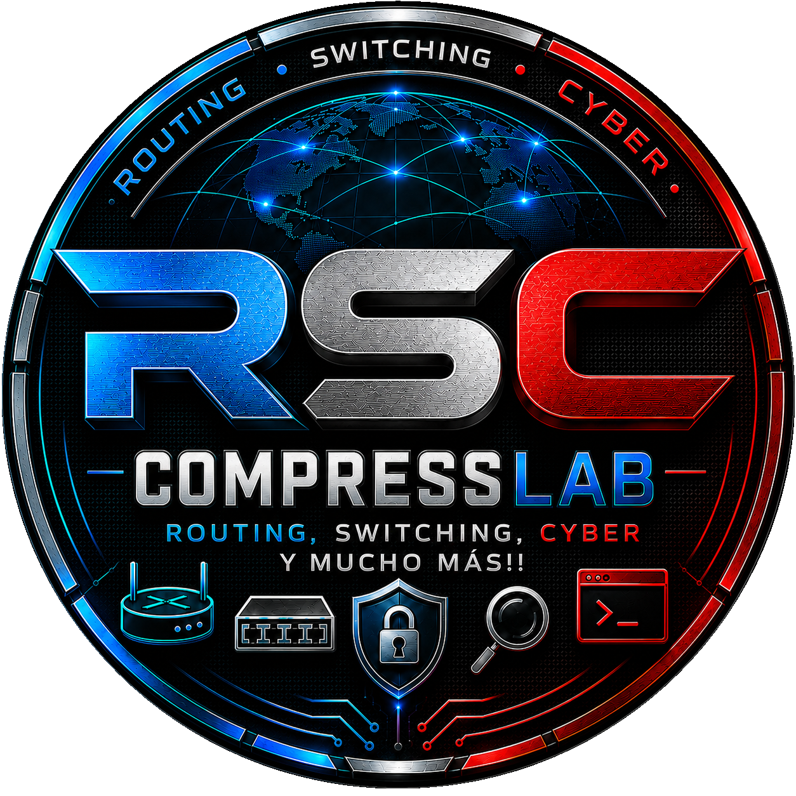
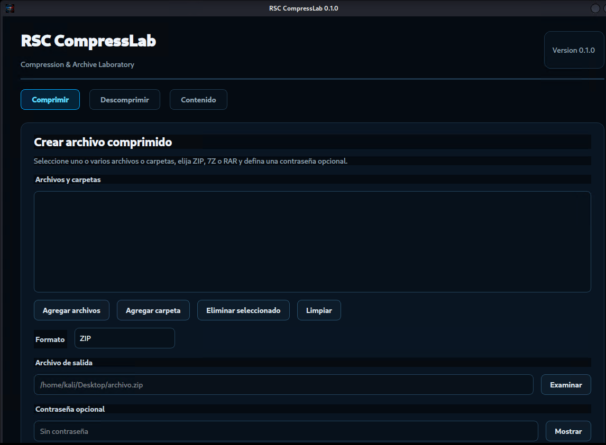

Crear archivos
Comprima uno o varios archivos o carpetas completas en formatos ZIP, 7Z o RAR.

Aplicación gráfica para Kali Linux diseñada para crear, inspeccionar y extraer archivos comprimidos ZIP, 7Z y RAR, con soporte para contraseña opcional y detección automática del formato.
Trabaje con archivos ZIP, 7Z y RAR desde una interfaz gráfica integrada, seleccionando archivos, carpetas, destino, formato y contraseña.

Interfaz gráfica de RSC CompressLab 0.1.0 ejecutándose en Kali Linux.
RSC CompressLab centraliza las operaciones más habituales con archivos comprimidos dentro de una interfaz gráfica sencilla e integrada con Kali Linux.
Comprima uno o varios archivos o carpetas completas en formatos ZIP, 7Z o RAR.
Seleccione un archivo comprimido y extraiga su contenido en la carpeta de destino seleccionada.
Utilice contraseña opcional al crear archivos y proporcione la clave cuando necesite acceder a contenido protegido.
Consulte la estructura y el contenido interno de un archivo comprimido antes de extraerlo.
Compruebe la integridad del archivo y detecte errores de contraseña o archivos incompatibles.
Inicie RSC CompressLab desde el menú de aplicaciones de Kali Linux o mediante el comando global compresslab.
Los tres formatos pueden utilizarse desde la misma interfaz para creación, inspección y extracción.
Seleccione el contenido, configure la operación y deje que RSC CompressLab ejecute el motor correspondiente.
Agregue uno o varios archivos o seleccione una carpeta completa.
Elija ZIP, 7Z o RAR, indique el destino y agregue contraseña si lo desea.
Cree, inspeccione o extraiga el archivo directamente desde RSC CompressLab.
Después de instalar el paquete puede iniciar RSC CompressLab desde el menú de aplicaciones o mediante su comando global.
Descargue el paquete Debian oficial de RSC CompressLab 0.1.0 e instálelo directamente en Kali Linux.
Kali Linux • AMD64 • Versión 0.1.0
SHA-256:
4e6e37d2db23b4b8bcaca53ca20da9eb9219a81474b7a00d631f6e1bab96cca2
RSC CompressLab forma parte del conjunto de aplicaciones desarrolladas por RSC para facilitar tareas prácticas, aprendizaje, experimentación y trabajo técnico dentro de entornos Linux y de laboratorio.